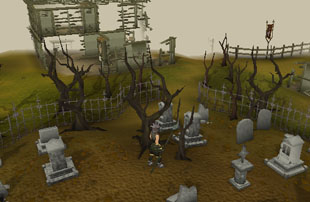
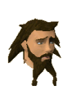
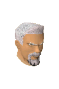

")
West Ardougne (Members)
Warning | Introduction | Location | Points of Interest | Personalities
Quests | Wardens of the Plague City | Miscellaneous
Quests | Wardens of the Plague City | Miscellaneous
Warning
You must have reached a certain point in Plague City to access West Ardougne.
Introduction

Since the arrival of the plague, King Tyras's name has been a bad one in West Ardougne, so the citizens are mostly pleased that he and his army have gone back through the Underground Pass to the west.
Having said that, the very nature of the city makes it an exciting place for explorers to rummage about. There are countless derelict buildings, houses filled with plague-stricken residents, and a graveyard filled to overflowing.
Location

To the south is the Battlefield, where gnomes and General Khazard's troops constantly collide in combat.
Far to the north of West Ardougne are the Baxtorian Falls, while closer lies the Combat Training Camp.
Finally, to the west is the Underground Pass, long impassable and filled with a vast array of evil creatures and the undead.
Points of Interest

The most interesting sight in the city must be the recruiter, who can be found trying to convince the people of West Ardougne to join King Tyras's army. From his station in the city square he receives all the insults and derision that the people of West Ardougne intend for their king.
Personalities

No one has seen King Tyras since he returned to the west with his army, and no one particularly minds his absence. He is widely regarded as the source of the city's ills. |

The Recruiter is the most widely loathed man in West Ardougne after the King. His mission is to raise a grand army for King Tyras, assembling beyond the Underground Pass. With the plague and the dangers of the Pass, his job is certainly not easy.
|
|
| The Recruiter can be found in the city square. |
|

Bravek is essentially in charge of the city during King Tyras's absence. Despite his apparent connection to the ruler of West Ardougne, most of the citizens seem to hold him in high regard. Possibly because he is all too happy to drink with them.
|

The mourners have been sent to West Ardougne by King Lathas of East Ardougne in order to control the plague and ensure that the city remains in quarantine. The Head Mourner, therefore, is in charge of making sure the city remains under tight watch and that no one enters or leaves.
|
|
| Bravek can be found in his house north of the city square, when he's not too hungover. | The Head Mourner can be found in his house south of the city square. |
|

In a building on the outskirts of the city lives a strange man who openly experiments with dark magic. Like many such people, he can be identified by his red robes. If you have a broken staff from the Underground Pass, he's the only man likely to know how to fix it.
|
| The Dark Mage can be found in a house at the west end of town. |
Quests
No quests can be started in West Ardougne.
Wardens of the Plague City

Mourners are the protectors of hygeine and sanitation in West Ardougne. They wear distinctive suits and gasmasks to protect them from the plague. Few of the citizens like them, as there are sad tales of the mourners taking a sick child from their parents and returning a few days later with sorry news.
|

The zombies of West Ardougne are the reanimated corpses of those who have died from the plague. Unsurprisingly, they are hideous and malformed creatures that all sane people try to avoid. |
|
| Mourners can be found in the eastern half of West Ardougne. | Zombies can be found in the graveyard in the south-west of the city. |

Ghosts might be an eerie sight anywhere else, but within West Ardougne, where the dead pile up in the streets and are hastily buried by the mourners, they are no real surprise. They can be dangerous, but Magic is quite effective against enemies that have no bodies.
|
| Ghosts can be found in the graveyard in the south-west of the city. |
Miscellaneous
- If you talk to the Recruiter, people will throw tomatoes at him which you can pick up.
- There is a chisel and a knife in the Head Mourner's house.
- Civilians in West Ardougne will buy grown cats, overgrown cats, wily cats and lazy cats from you for 100 death runes. Regular men and women won't buy them as they're too poor to afford a cat.

More articles in
Cities and Towns
|
|